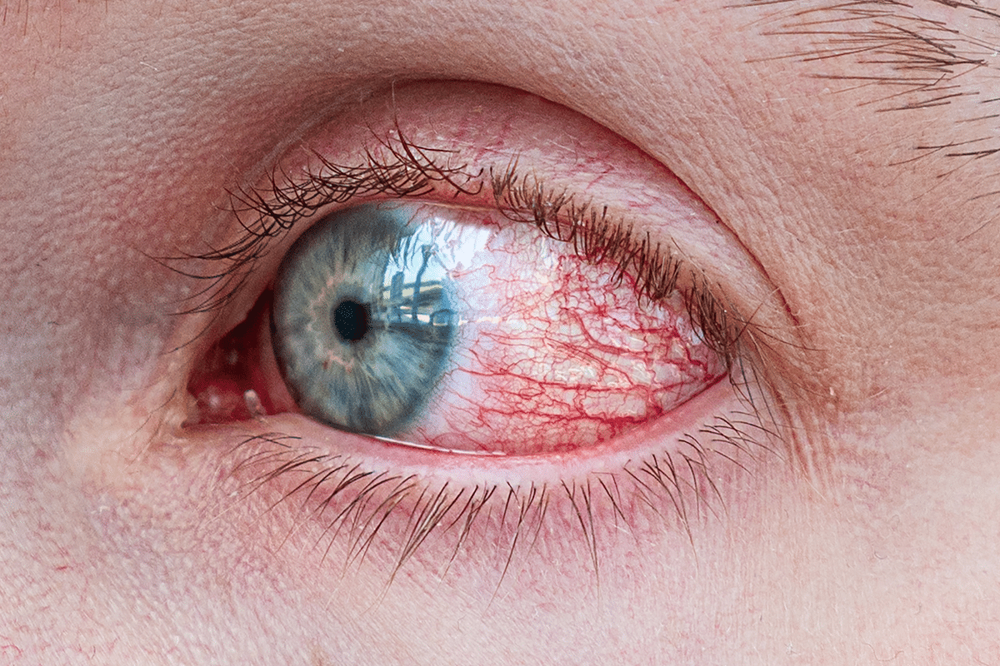

Atención prioritaria
Glaucoma
Es una enfermedad que daña el nervio óptico y puede causar pérdida permanente de visión si no se detecta y trata a tiempo. Síntomas: en sus etapas iniciales suele no presentar síntomas. En fases avanzadas puede provocar pérdida de visión periférica. Algunas formas agudas causan dolor ocular intenso, ojo rojo, visión borrosa, náuseas y halos alrededor de las luces.
Solicitar Turno